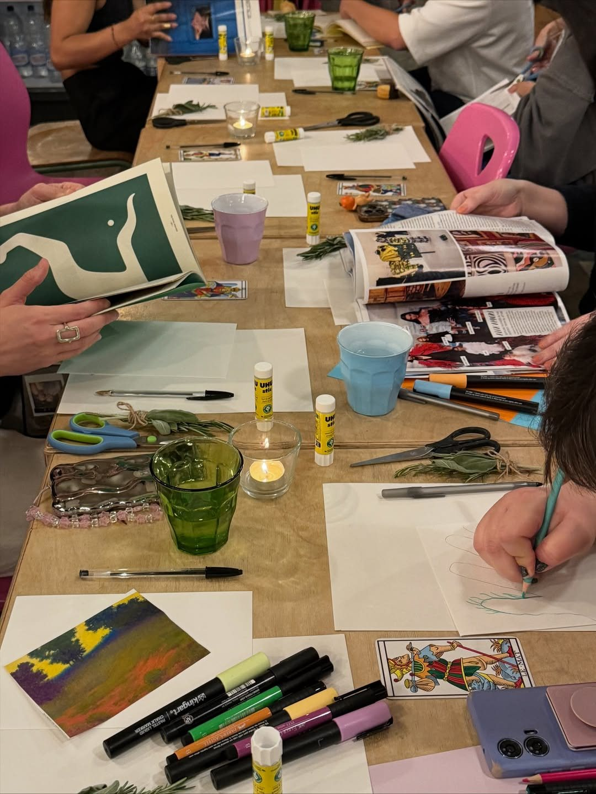

Tarot de Marseille with Laura Lo Faro
The cards come out when you ask.
One-to-one readings, beginners classes, six-week courses and nights where you make art about the card you pulled. In English or Italian, at the café or online.

& 1:1
Readings
Laura is a tarologa. Her readings are for self-development and reflection: the cards give you a picture of where you stand, and the two of you talk about what you see in it.
She reads with the Tarot de Marseille, the old woodcut deck in red, blue and yellow, and trained with several teachers, Fabiana Spagnuolo among them.
At the café
A table at 21 SID, a coffee if you want one, and the deck laid out between you. Book ahead so Laura can step out from behind the counter.
Ask for a timeOnline
The same reading over a video call, from wherever you are.
Ask for a timeAt your event
Laura takes the deck on the road. She has read at Mercato Metropolitano’s Big Market, London’s Day of the Dead on Columbia Road, the Satanic Flea Market at Electrowerkz, a solstice party at Allens Community Garden and at wine tastings in Hackney.
Invite her to yoursPrices depend on the kind of reading and how long you want. Message Laura and she will send the current ones.
How booking a reading works
Send a message
WhatsApp or Instagram. Say whether you want to meet in person or online, and in which language.
Agree a time
Laura replies with her next free slots and the price. You pick one.
Bring a question
Or just bring yourself. Either way the cards will find something to talk about.
Classes and courses
Learn to read for yourself. Classes are held at the café in the evening and start from zero.
Dated and on sale
Tarot for Beginners
An introduction to numerology and what each number means in the cards, then the Fool’s Journey through the Major Arcana, then a Q&A. Tea and biscuits included.
Run at 21 SID with The Psychedelic Society, who sell the tickets.
Find the next dateBeginners course
The full grounding, one evening a week. A recent five-week block covered twelve hours of theory and four hours of practice, with an individual reading for each student and a reading list to take away.
New blocks start several times a year.
Ask when the next one startsMinor Arcana course
For people who know the Majors and want the other fifty-six cards: how the suits and numbers speak to the rhythms of everyday life. Also run with The Psychedelic Society.
Find the next dateOne-to-one lessons
Your own pace, your own deck, your own questions. Good if a weekly group does not fit your diary.
Ask about lessonsTarot Creative Night
Seven o’clock at 21 SID. Each night has a theme and a card. You pull, you talk, then you cut, stick and draw what came up. All materials are on the table when you arrive.
Laura hosts these with a collaborator: Lobster and Pearls for some, Ritualised Softness by Giorgia for others. Past themes have included The World, The Inner Garden, The Yes, masks, and the whispers of the year ahead.

Drink & Draw: Tarot Café
A beginner-friendly drawing social led by London artist Mudiay. You personalise a small black-and-white tarot card to keep and add to a group poster. Coffee and cake are part of the ticket, and so are the art materials.
Dates and tickets on EventbriteTarot and tasting
A glass in one hand, a card in the other. Laura reads at Feminist Wine Bar’s Spill tastings: full moon and tarot specials held here at 21 SID, and a Hallowine night at In Vino Veritas on Well Street.
Follow on Instagram for the next one
Bring a question, or just bring yourself.
The quickest way to book anything on this page is a message to Laura.